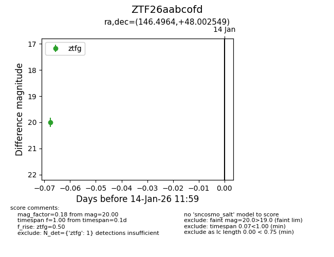
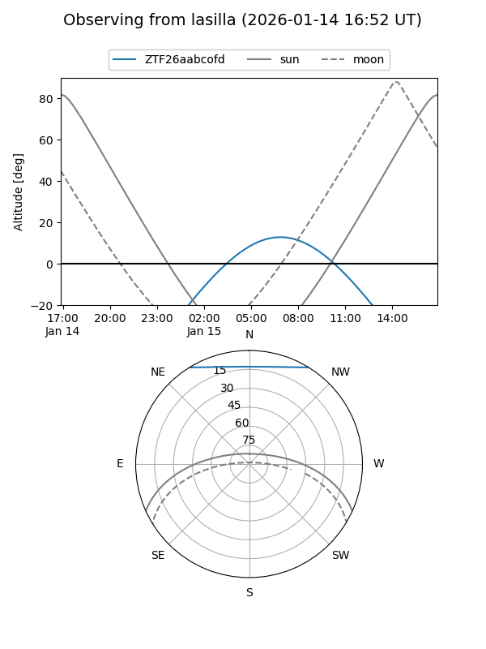
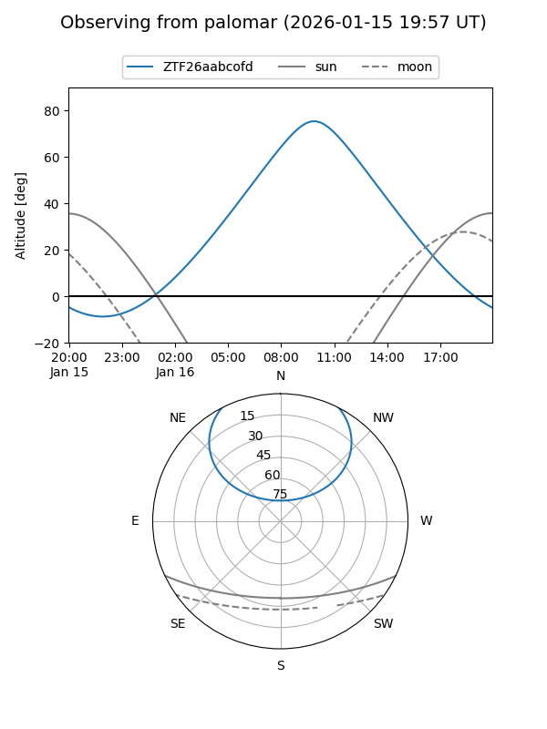

ZTF26aabcofd
Target ZTF26aabcofd at 2026-01-14 12:00
Aliases and brokers:
FINK: link
Lasair: link
ALeRCE: link
alt names
ZTF26aabcofd (ztf,fink_ztf)
Coordinates:
equatorial (ra, dec) = 146.4964,+48.00255
equatorial (HMS+DMS) = 09:45:59.14,+48:00:09.18
galactic (l, b) = (169.9757,+48.57430)
Flags:
Photometry:
last ztfg=20.00
1 ztfg detections
Lightcurve

Visibility


Additional plots